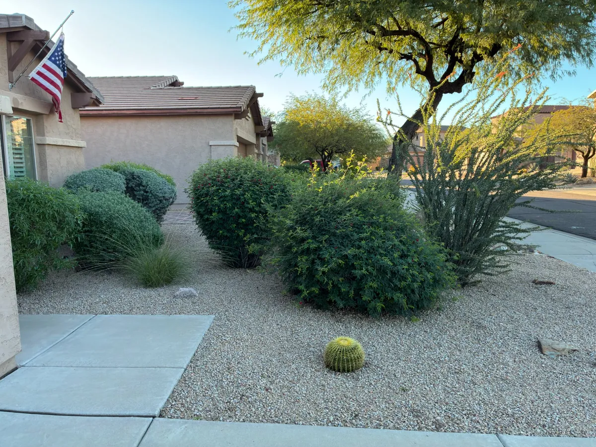

About Dry Heat Yards
Our missionArizona homeowners deserve better landscaping information and better ways to find qualified professionals.
Dry Heat Yards is an Arizona-made, statewide directory that helps homeowners find licensed landscaping contractors who understand desert conditions, from 115°F summers in the Valley to snow in Flagstaff.
National directories treat a yard in Peoria the same as one in Portland. We organize by Arizona city and by the services desert homeowners actually need: xeriscape conversions, artificial turf, pavers, drip irrigation, and palm trimming.
Our main rule: every contractor we list must hold an active Arizona ROC license. Yard maintenance crews, which don't need a license for routine mowing and cleanup, are listed separately and clearly labeled. Learn how we verify
Why we started
We have lived in the Valley of the Sun for more than 20 years, and we have hired our share of landscapers. Too many didn't show up when they said they would. Some overcharged to plant a single tree or shrub. Others finished the job without raking the rock or cleaning up after themselves.
Our landscaper today is different. They hold an active Arizona ROC license, and every month they send a bill with an online payment link. We never have to give them instructions, chase them down or pay in cash. The work just gets done.
Every Arizona homeowner deserves that experience. So we built Dry Heat Yards to make good, licensed landscapers easier to find: Arizona-only, license-checked every month, and phone-first, so you talk to the business directly.
Dry Heat Yards is veteran-owned, started in Peoria by a U.S. Air Force veteran with 20 years of service.
Our founder, Rich Moon, also owns Arizona Tee Shirts (azteeshirts.com), an Arizona-themed T-shirt and gift shop, and wrote The Arizona Desert Yard Handbook.
Questions? Contact us.

What you'll find here
- 22 Arizona cities plus Western Arizona, from Phoenix, Mesa, Tempe and Scottsdale to Tucson, Prescott, Sedona, Flagstaff and Yuma, each with its own list of licensed pros.
- Pool builders and pool service by city, with licensed builders kept separate from weekly pool cleaners.
- Rock yards and landscape supply for decorative rock, DG and boulders.
- Plant nurseries near every city, for desert trees, cactus and shrubs.
- Top Rated 2026: licensed landscapers and pool companies with a Google rating of 4.8 or higher from 100+ reviews. Nobody can pay to be included.
- Free homeowner guides on watering, grass removal rebates, landscape rock, patio furniture, palm trimming, monsoon storm cleanup and what turf, pavers and pool work cost in Arizona.
- Yard Tools & Gear: 64 hand-picked tools and supplies for desert yards, from drip irrigation to shade sails and scorpion lights, with 8 buying guides.
- The Arizona Yard Planner: a printable 12-page planner with a month-by-month calendar, watering logs and a hiring checklist.
- Storm Help: what to do after a monsoon storm, from safety first to cleanup and when to call a pro.
- Real homeowner costs: anonymous "What did you pay?" reports for turf, rock, pavers, pool work and more, by job and city.
- This month in your yard: a monthly to-do list for desert and high-country yards.
- Side-by-side comparisons: turf vs. grass, DG vs. rock, drip vs. sprinklers, xeriscape vs. lawn and pebble vs. plaster.
How we keep it accurate
Every listing is re-checked monthly against the latest ROC license list, and homeowners can report closed businesses or wrong phone numbers on any listing. Homeowners always call businesses directly. We don't sell or share leads.
For businesses
Licensed landscapers, maintenance crews, pool companies, rock yards and nurseries can get listed free. Featured spots are optional.
How we make money
Dry Heat Yards is free for homeowners, and we never charge businesses per lead or per call. Running the site isn't free: web hosting, email, the domain, and the monthly license checks all cost money. This income covers those costs and keeps the directory free for homeowners. Dry Heat Yards is also a small, veteran-owned Arizona business, so your support helps a veteran earn a living from his own work.
We earn money in four ways:
- Featured listings: licensed businesses can list free, or upgrade to a Featured listing for $29/month ($290/year) with top placement on their city and service pages. Featured listings are always labeled. See Featured listings.
- The $7 Yard Planner, sold on this site.
- Amazon: product picks in our guides and Yard Gear pages. As an Amazon Associate I earn from qualifying purchases.
- Ads: some pages show ads from Google AdSense.
None of this changes who gets listed. Every landscaper must hold an active Arizona ROC license, and every weed control company an active Arizona Department of Agriculture license, whether or not they pay. Product picks and ads are kept separate from listings.